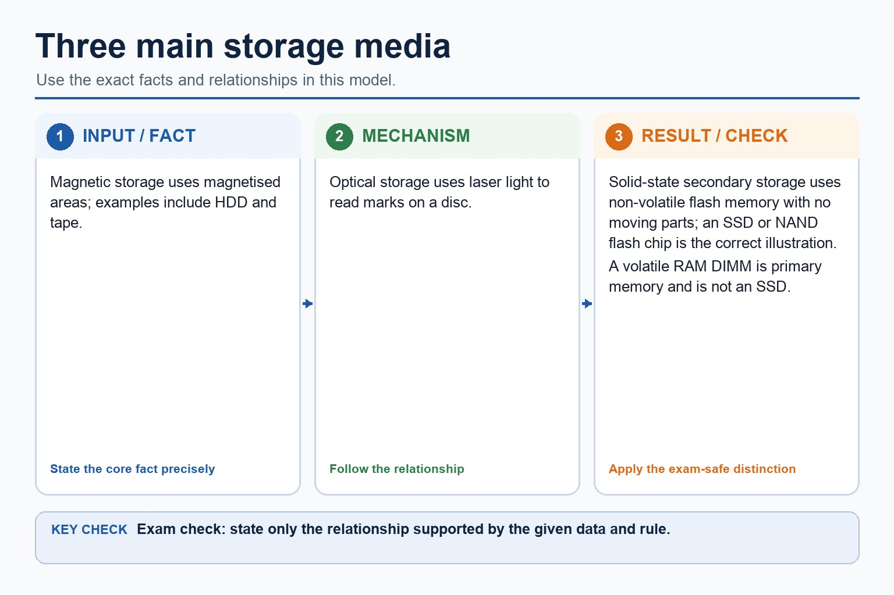
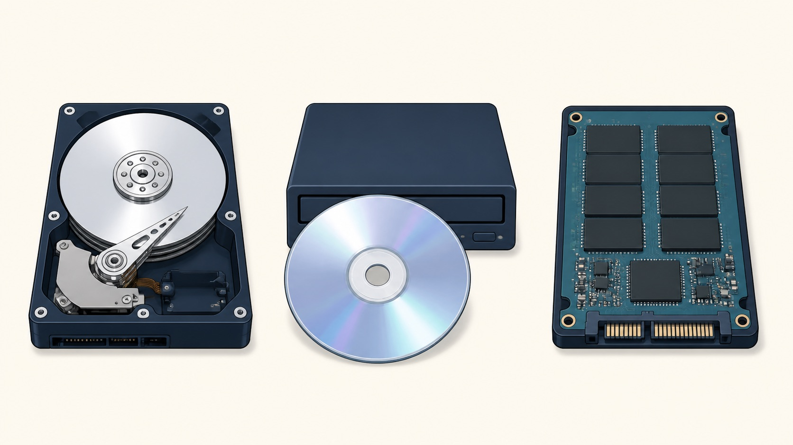
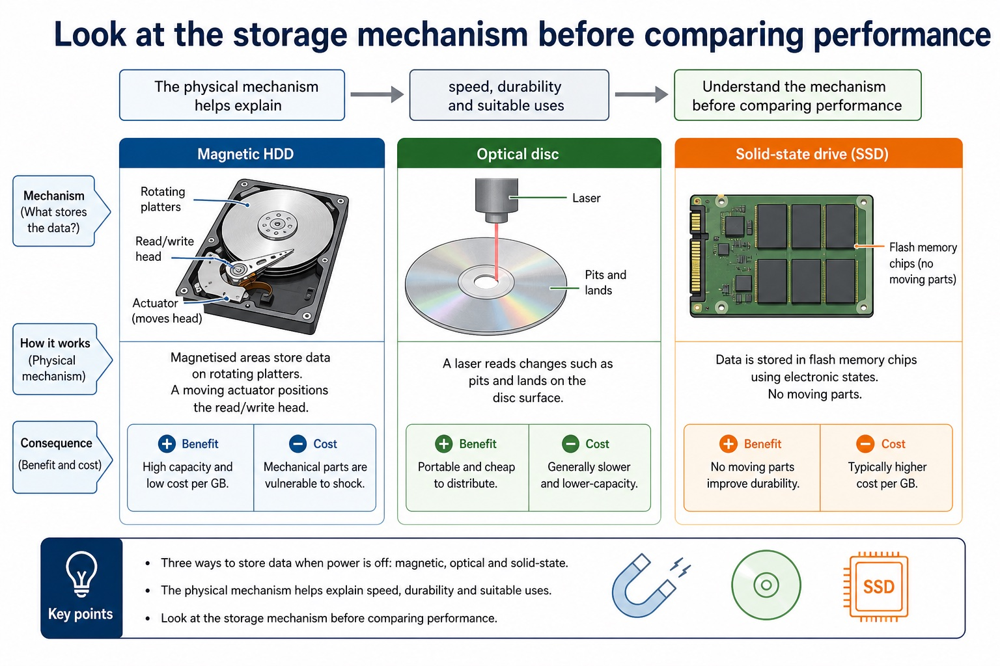
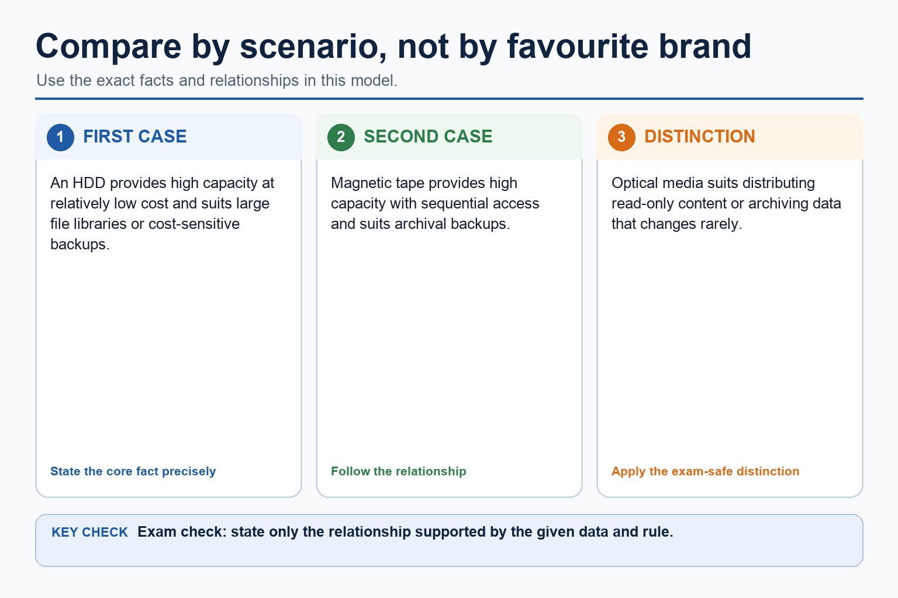

Monitoring, control, feedback and required sensors
A monitoring system uses sensors to collect data for recording, display or alerts; it does not necessarily change the environment. A control system uses sensor input and a stored rule or target to send output to an actuator. In closed-loop control, feedback is the new sensor reading produced after the action, allowing the controller to adjust or stop the output.
A temperature sensor measures temperature, a pressure sensor measures force per unit area or pressure, an infra-red sensor detects infra-red radiation, and a sound sensor detects sound level or sound waves. The sensor supplies input data; it does not itself decide or perform the control action.
Choose a sensor by matching the physical quantity to the application: temperature for a greenhouse, pressure for a tyre or burglar mat, infra-red for a remote-control receiver or beam alarm, and sound for a noise monitor. A light-intensity sensor is useful supporting context but does not replace the named infra-red and sound sensors.
Actuators produce physical output actions such as moving a vent or switching a fan after the controller processes sensor input.
Worked example: Greenhouse monitoring and control
A monitoring system records and displays temperature readings. A control system also compares each reading with a threshold and activates a fan motor actuator when the greenhouse is too hot. New temperature readings provide feedback, so the fan can stop when the target is reached.
Required sensor types and applications
Required sensor types and applications: source-grounded visual explanation.
Lesson fact: A temperature sensor measures temperature and a pressure sensor measures pressure.
Lesson fact: An infra-red sensor detects infra-red radiation, for example in a beam alarm or remote-control receiver.
Lesson fact: A sound sensor detects sound level or sound waves, for example in a noise monitor.
Lesson fact: A sensor supplies input data; the processor applies the rule and an actuator performs any physical output.
Lesson fact: Light intensity is supporting context and does not replace the named infra-red or sound sensors.
Core syllabus practice
Monitoring, control, feedback and required sensors: apply and assess
Targeted practice
1. Compare monitoring from control.
Show answer
Monitoring records, displays or reports sensor data; control uses data to change an actuator or system state.
2. What is feedback in a closed-loop control system?
Show answer
A new sensor reading after the action, used to adjust or stop the output.
3. Which named sensor detects radiation used by a remote control?
Show answer
An infra-red sensor.
4. Which named sensor is suitable for a classroom noise monitor?
Show answer
A sound sensor.
5. Why is a sensor not an actuator?
Show answer
A sensor supplies input about a physical quantity; an actuator produces a physical output action.
Exam-style question
5 marks
A greenhouse system records temperature and automatically opens a vent when necessary. Compare its monitoring and control functions and explain the feedback cycle.
Show MS
Answer
Guidance
Marks
monitoring records/displays temperature readings
Do not state that monitoring necessarily changes an actuator, or that a sensor performs the control decision.
1
control compares a reading with a rule/threshold
1
controller sends output to a vent motor or other actuator
1
new sensor readings provide feedback after the action
1
feedback is used to adjust or stop the actuator
1
Lesson 032 | 45 minutes | Paper 1 Section 3
Secondary storage is where data survives the power switch.
This lesson compares magnetic, optical and solid-state storage. The exam
skill is choosing a suitable medium for a scenario and justifying it with
capacity, speed, portability, durability and cost.
Classifymagnetic, optical and solid-state storage media
Comparecapacity, speed, durability, portability and cost
Justifystorage choices for backups, software distribution and portable devices
HDD | optical disc | SSD | flash drive
Storage is not just "big memory". It is the long-term cupboard, and some cupboards survive being dropped better than others.
Why this matters
Exam marks usually come from matching a characteristic to the scenario. "SSD is fast" is a start; "SSD is fast and shock-resistant for a laptop" is stronger.
Common error
Secondary storage is non-volatile, but that does not mean every device is equally reliable, fast or suitable.
Warm-up hook
A student stores videos on an external HDD, installs apps on an SSD, shares photos with a flash drive and finds an old DVD. Why are these not all the same?
Click one storage type. The useful exam habit is linking medium -> property -> scenario.
Knowledge point 1
What secondary storage does
Non-volatileData remains when power is switched off.Long-termStores files, programs, backups and operating system data.Usually slowerSecondary storage is usually slower than RAM for direct access.Scenario-basedThe best medium depends on speed, capacity, durability, portability and cost.
What secondary storage does: source-grounded visual explanation.
Lesson fact: Non-volatile Data remains when power is switched off.
Lesson fact: Long-term Stores files, programs, backups and operating system data.
Lesson fact: Usually slower Secondary storage is usually slower than RAM for direct access.
Lesson fact: Scenario-based The best medium depends on speed, capacity, durability, portability and cost.
Knowledge point 2
Three main storage media
Magnetic storage
Stores data using magnetised areas on a medium.
Examples: hard disk drive (HDD), magnetic tape.
Typical strengths: high capacity, relatively low cost per GB; tape is useful for large backups.
Limitations: moving parts in HDDs, slower than SSDs, vulnerable to shock and magnetic fields.
Optical storage
Uses laser light to read marks/pits on a disc surface.
Examples: CD, DVD, Blu-ray.
Typical strengths: cheap, portable, useful for distributing or archiving data that changes rarely.
Limitations: lower capacity and slower access than HDD/SSD; discs can scratch.
Solid-state storage
Stores data electronically in flash memory with no moving parts.
Examples: SSD, USB flash drive, memory card.
Typical strengths: fast access, durable in portable devices, quiet and low power.
Limitations: often higher cost per GB than HDD; finite write cycles.
Three main storage media

Three main storage media: source-grounded visual explanation.
Lesson fact: Magnetic storage uses magnetised areas; examples include HDD and tape.
Lesson fact: Optical storage uses laser light to read marks on a disc.
Lesson fact: Solid-state secondary storage uses non-volatile flash memory with no moving parts; an SSD or NAND flash chip is the correct illustration.
Lesson fact: A volatile RAM DIMM is primary memory and is not an SSD.
Visual explanation
Look at the storage mechanism before comparing performance
The physical mechanism helps explain speed, durability and suitable uses.

MagneticOpticalSolid-state
Three ways to store data when power is off. The illustration identifies the mechanism; the cards below state the exam-safe explanation.
Magnetic HDD
Magnetised areas store data on rotating platters. A moving actuator positions the read/write head.
Consequence: high capacity and low cost per GB, but mechanical parts are vulnerable to shock.
Optical disc
A laser reads changes such as pits and lands on the disc surface.
Consequence: portable and cheap to distribute, but generally slower and lower-capacity.
Solid-state drive
Electronic flash-memory cells store data with no moving parts.
Consequence: fast and shock-resistant, but often costs more per GB than HDD storage.
Check your reading: why is an SSD often suitable for a laptop?
It has no moving parts, so it is more resistant to knocks and vibration, and it normally provides faster access than an HDD. This does not mean an SSD can never fail.
Look at the storage mechanism before comparing performance

Look at the storage mechanism before comparing performance: source-grounded visual explanation.
Lesson fact: Visual explanation
Lesson fact: The physical mechanism helps explain speed, durability and suitable uses.
Lesson fact: Magnetic
Lesson fact: Solid-state
Lesson fact: Three ways to store data when power is off. The illustration identifies the mechanism; the cards below state the exam-safe explanation.
Lesson fact: Magnetic HDD
Lesson fact: Magnetised areas store data on rotating platters. A moving actuator positions the read/write head.
Lesson fact: Consequence: high capacity and low cost per GB, but mechanical parts are vulnerable to shock.
Lesson fact: Optical disc
Lesson fact: A laser reads changes such as pits and lands on the disc surface.
Lesson fact: Consequence: portable and cheap to distribute, but generally slower and lower-capacity.
Lesson fact: Solid-state drive
Knowledge point 3
Compare by scenario, not by favourite brand
Medium
Speed
Capacity/cost
Good scenario
Magnetic HDD
Slower than SSD; mechanical parts.
High capacity and low cost per GB.
Desktop storage, large file libraries, cost-sensitive backups.
Magnetic tape
Slow sequential access.
Very high capacity and low cost for backups.
Archiving and large organisation backups.
Optical disc
Generally slower access.
Lower capacity; cheap to produce.
Distributing fixed content or offline archive copies.
Solid-state SSD
Fast access, no moving parts.
Often higher cost per GB than HDD.
Laptops, operating system drive, fast application loading.
USB flash / memory card
Fast enough for portable transfer; varies by device.
Portable, small, removable; capacity varies.
Moving files between devices, cameras, phones, embedded devices.
Compare by scenario, not by favourite brand

Compare by scenario, not by favourite brand: source-grounded visual explanation.
Lesson fact: An HDD provides high capacity at relatively low cost and suits large file libraries or cost-sensitive backups.
Lesson fact: Magnetic tape provides high capacity with sequential access and suits archival backups.
Lesson fact: Optical media suits distributing read-only content or archiving data that changes rarely.
Interactive tool
Choose the storage medium
Worked examples
Choosing storage with reasons
Your turn
Practice with instant checking
Mistake debugging
Fix the weak storage answer
"Use RAM for backups because it is fast."
Backups need non-volatile secondary storage. RAM is volatile, so backup data would be lost when power is off.
"SSD is always best because it is fastest."
SSD is fast and durable, but it may cost more per GB than HDD or tape. For huge low-cost archives, magnetic storage may be more suitable.
Exam-style questions
Questions with expandable MS
Attempt first, then expand the mark scheme. Credit depends on naming the storage type and linking its characteristics to the scenario.
Summary
Secondary storage in six exam sentences
Secondary storageNon-volatile long-term storage for files, programs and backups.
Magnetic HDDHigh capacity and low cost per GB, but mechanical and slower than SSD.
Magnetic tapeGood for huge sequential backups and archives.
Optical discCheap removable media for fixed content or archive copies.
Solid-stateFast, durable, no moving parts, often higher cost per GB.
SuitabilityAlways connect the medium to capacity, speed, durability, portability and cost.
Homework
Clear tasks
Create a comparison table for magnetic, optical and solid-state storage with examples and two characteristics each.
Write a 4-mark answer recommending storage for a laptop used by a travelling student.
Write a 4-mark answer recommending storage for a company archive that stores huge backups for years.
Explain why "SSD is always best" is not a full exam answer.
Comparison: magnetic HDD/tape; optical CD/DVD/Blu-ray; solid-state SSD/USB/memory card.
Laptop: SSD is suitable because it is fast, has no moving parts and is less vulnerable to knocks.
Archive: magnetic tape may be suitable because it offers very high capacity and low cost for long-term sequential backups.
Evaluation: fastest is not always most suitable; cost, capacity, write patterns and durability also matter.